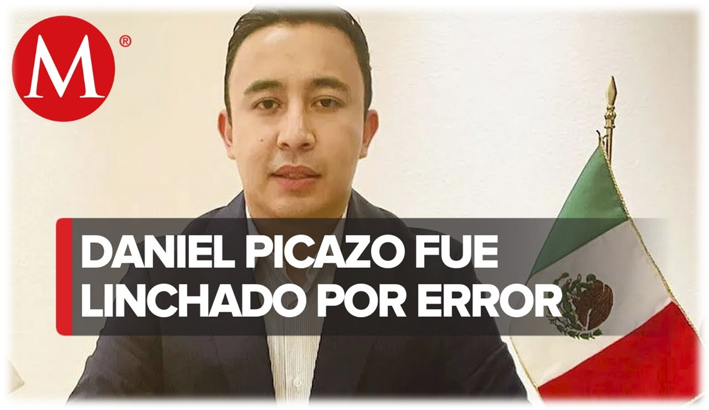

Fake News
Las Fake News o en español por su traducción “Noticias Falsas”. Como su nombre lo indica, son noticias
que no son ciertas o que han sido sacadas de contexto. Este es un fenómeno que ha existido desde que el
ser humano utiliza el lenguaje para comunicarse.
Este término es utilizado para conceptualizar la divulgación de noticias falsas que provocan un
peligroso círculo de desinformación. Las redes sociales permiten que los usuarios sean productores y
consumidores de contenidos a la vez, y han facilitado la difusión de contenido engañoso, falso o
fabricado. Así se genera un circuito vicioso, y una noticia falsa se replica miles de veces en cuestión
de segundos.
Como identificar Fake News
A continuación, te presentamos una serie de pasos para identificar noticias falsas.
Causas y Consecuencias
La Organización Mundial de la Salud habla de infodemia para referirse a una sobreabundancia de información que incluye los intentos deliberados por difundir información errónea. En la infodemia no luchamos contra un virus, sino contra la mentira que daña nuestra mente y que también puede afectar nuestra salud al impulsarnos a tomar decisiones equivocadas. Las fake news tienen la particularidad de apelar fuertemente al lado emocional de las personas, con lo que evitan el filtro de razonabilidad que se impondría a un contenido en condiciones normales.
A continuación, te presentamos algunos casos oficiales que tuvieron una consecuencia severa por no saber identificar una noticia falsa de una real. Estas noticias son verídicas, así como documentadas por medios oficiales encargados de repartir información a nivel nacional.
Vacunación COVID-19
En la sección de tecnología, Pato González, habla sobre la polémica que genera la Red 5G asi como las opiniones y la relacion que tiene con el coronavirus.
ASalto Al Capitolio
Donald Trump lideró una manifestación en Washington D.C. que terminó en un asalto al Capitolio, otros actos violentos y un toque de queda en la ciudad.
Caso Daniel Picazo
Conoce más sobre el caso del joven abogado Daniel Picazo, una víctima inocente asesinada por la consencuencia y difamación de una noticias falsa.
Desarrollo Del Proyecto
Este es un proyecto dedicado y desarrollado en la materia de Taller de Investigación II para la universidad del Instituto Tecnológico De Tijuana, cuyo único fin es informar y orientar al público sobre el tema de las fake news.
Para el desarrollo de este proyecto, se ha optado por realizar un sitio de entorno web donde el usuario podrá ver información recabada de noticias, videos, estadísticas, etc., esto para un análisis y compresión del lector para la información presentada o expuestas sobre el tema de noticas falsas.
Idea Principal
Problema: En la última década se ha presentado un fenómeno conocido como “fake news” que trata básicamente de noticias amarillistas con contenido alarmante y amarillista a difusión de contenido engañoso, falso o fabricado para diferentes medios de telecomunicaciones.
Solución: Desarrolar una aplicación web que muestre y desmienta noticias de última hora que pueden ser propensas a ser llamativas y engañosas para el público, y a su vez que sea de utilidad para conocer la fuente confiable de dicha noticia.
Planteamiento Del Problema
A partir de la emergencia de plataformas sociales se ha vuelto mucho más sencilla la divulgación de noticias engañosas. En principio, porque al pasar a una forma de comunicación networking, a diferencia del broadcasting, el intercambio de mensajes en red, permite que los usuarios sean además de consumidores, también productores de discursos que circulan y que muchas veces son falsos. Y en segundo lugar, estas plataformas utilizan un algoritmo que distribuye el contenido más relevante para cada usuario, logrando que la información que se le muestra a cada uno esté condicionada y filtrada. Pero también hay algo a tener en cuenta y es que el flujo informativo en las redes sociales se actualiza constantemente no sólo por relevancia para el usuario sino también de acuerdo al alcance e interacciones que tiene el posteo, validando una noticia sólo por su nivel de difusión. Por otro lado, los distintos intereses políticos, partidarios, o simplemente una confusión se vuelven motivos para que de una manera más frecuente se viralice un contenido engañoso.
Hipótesis
Las noticias falsas pueden influir en la decisión que el lector tome, en lo general, si el lector llega toparse con una noticia falsa y este no sabe identificar si la fuente es fidedigna o de una fuente confiable, las decisiones que el lector tome pueden variar dependiendo con el tipo de noticia que se pueda llegar a encontrar.
Objetivos
Objetivos Generales
Objetivos Especificos
Encuestas: Resultados y análisis
Descripción En la primera pregunta se contabilizaron las personas de cada género.
Análisis: El resultado de este análisis fue que el 78.3% (313 personas) fue del género masculino mientras que el 21.8% (87 personas) fue el género Femenino.
Conclusiones: N/A.
DescripciónEn la segunda pregunta se realizó una calculo de la edad de los entrevistados.
Análisis: Los resultados de este análisis fue que el 79% (316 personas), ronda un promedio de entre 20 a 30 años de edad, un 8.5% (34 personas) ronda un promedio de entre 18 a 20 años de edad, un 6.8% (27 personas) ronda un promedio de 30 a 40 años, un 3.5% (14 personas) ronda un promedio de 40 a 50 años edad y un 2.2% (9 personas) ronda un promedio de 55 años de edad.
Conclusiones: La mayoría de entrevistados para el caso de estudio fueron jóvenes entre 20 a 30 años edad, mientras la población que menos predomino fueron adultos mayores de 40 años de edad.
Descripción En la tercera pregunta se le plantea al encuestador si conoce sobre el tema principal.
Análisis: Los resultados de esta pregunta fue que el 59.5% (224 personas) conocen un indicio sobre el tema, un 32% (124 personas) aseguran estar familiarizados con el tema, mientras que el 9.5% (38 personas) afirman no conocer sobre el termino de “Fake News”
Conclusiones: En base a los porcentajes podemos concluir que, de 400 entrevistados, un 90% tiene relación con el tema mientras que el otro 10% no cuenta con conocimientos del tema.
Descripción En la cuarta pregunta se le plantea al encuestado preguntarle si toma en cuenta la fuente de información.
Análisis: Los resultados de esta pregunta fue que el 56% (224 personas) que son las que toman más o menos las fuentes de información un, 24,3% (97 personas) son los que dijeron que si toman en cuenta las fuentes de información de donde miran las cosas o escuchan y el 19,8% (79 personas) son los que afirmaron que no toman en cuenta la fuente de información de donde miran la información.
Conclusiones: En base con los porcentajes que obtuvimos que el 100% son 400 entrevistados el 20 % es el que no toma en cuenta la fuente de información mientas que el otro 80 % están entre que sí y más o menos que si toman en cuenta.
Descripción En la quinta pregunta se plantea preguntare a los encuestados cuales son los medios que utilizan para informarse y que nos digan cuales son.
Análisis: - Análisis: Los resultados obtenidos en esta pregunta fue quela mayoría de los encuestados seleccionaron que son las redes sociales como también el internet fue las 2 que más seleccionaron las que siguen de estas fueron televisión, radio, periódico y revistas y mayor mente en internet tomando en cuenta las fuentes de información que son las que quedaron igual.
Conclusiones: La mayoría de los entrevistados para la pregunta de qué medios de comunicación usan nos dimos cuenta que son las redes sociales y el internet donde la mayoría se comunica.
Descripción En la sexta pregunta se le plantea preguntar al encuestador cual es el medio en el que identifica más noticias falsas.
Análisis: Los resultados de esta pregunta fue que el 52% (208 personas) donde identifican mas las noticias falsas son las redes sociales, un 43% (172 personas) son las que identifican las noticias falsas en internet, el 4% (16 personas) en el medio que identifican es en la televisión y el 1% (4 personas) es en el periódico donde identifican las noticias falsas
Conclusiones: En base a los porcentajes obtenidos podemos concluir que 208 personas en el medio de comunicación que identifica mas las noticias falsas son las redes sociales el 172 fue en el internet ,16 televisión y 4 fue en el periódico.
Descripción En la séptima pregunta se le plantea al encuestador si cree que las noticias falsas sean peligrosas.
Análisis: Los resultados obtenidos en esta pregunta son de que el 59,4 % (236 personas) están en de acuerdo de que son peligrosas, el 31,7% (126 personas) están en totalmente de acuerdo que son peligrosas, el 6% (24 personas) están en neutral y 2,5(10 personas) están en desacuerdo.
Conclusiones: En base a los porcentajes obtenidos podemos concluir que el 91,1% (362 personas) están de acuerdo que las noticias falsas son peligrosas el 6% está en neutral y el 2,5 % están en desacuerdo que las noticias falsas sean peligrosas.
Descripción En la octava pregunta el encuestado dice si a caído alguna ves en alguna noticia falsa.
Análisis: El resultado de esta pregunta fue el 37,1% (148 personas) que algunas veces han caído en las noticias falsas, el 34,6% (138 personas) es que casi siempre caen en ellas otro resultado que es 16,5% (66 personas) es que casi nunca caen ellas, el 9,5 % (38 personas) son las que siempre caen en las noticias falsas y el 2,3 % (9 personas) son las que nunca caen en ellas.
Conclusiones: En base con los porcentajes que obtuvimos podemos concluir el 81,2% están en que a veces, casi siempre y siempre caen las noticias falsas y el 18,8 es el porcentaje de que casi nunca y nunca.
Descripción En la pregunta nueve se le pregunta al encuestador si cree que haya mas desinformación de noticias falsas que en otros años.
Análisis: Los resultados obtenidos de esta pregunta son que el 54,8 % (219 personas) están de acuerdo que hay más desinformación, el 26% (104 personas) están totalmente de acuerdo un 17% (68 personas) están en neutral y el 2,2% (9 personas) están en desacuerdo.
Conclusiones: En base a los resultados obtenidos es que el 80,8 % están en acuerdo hay más desinformación el 17 % están en neutral y el 2,2 % están en desacuerdo que hay mas desinformación de noticias falsas que otros años fue lo que nos dimos cuenta los porcentajes que obtuvimos.
Conclusiones
Nuestra conclusión sobre el proyecto es que nos dimos cuenta que es un tema importante las “fake news” ya que con la tecnología actualmente cualquier persona tiene acceso al internet y a la difusión de información por cualquier medio ya sea local o digital, ya que las noticias falsas afectan de manera grave a la sociedad, incluso a grandes instituciones o personas físicas, la idea con nuestro proyecto es que con la guía de nuestro sitio web ya aplicado en la vida real, cualquier persona sea capaz de reconocer cuando una noticia es falsa, cuando nos quieren manipular o hacernos creer algo que no es en realidad.